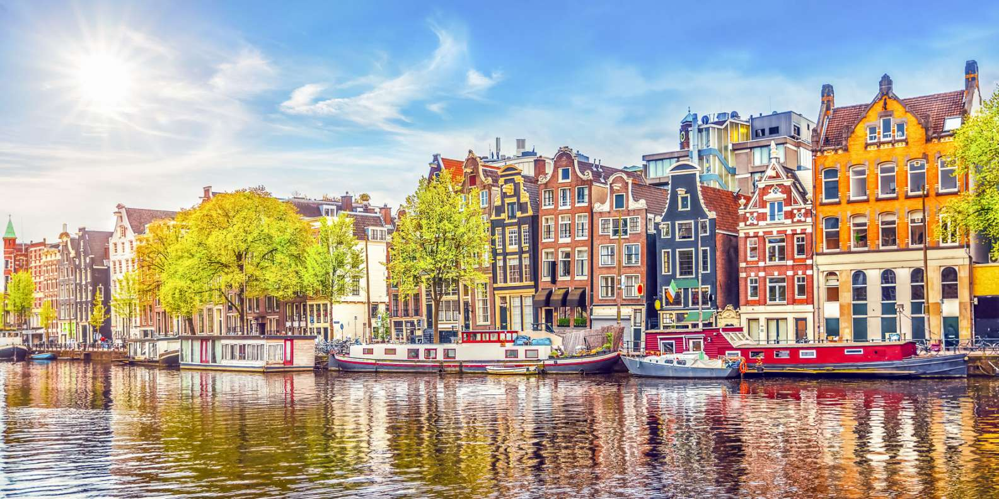

Amsterdam è la capitale dei Paesi Bassi, nota per il suo patrimonio artistico, l'elaborato sistema di canali e le case strette con facciate a capanna, eredità del XVII secolo, l'epoca d'oro della città. Il Quartiere dei Musei ospita il Museo Van Gogh, il Rijksmuseum, con opere di Rembrandt e Vermeer, e il museo Stedelijk, dove sono esposte opere d'arte moderna. La bicicletta è il simbolo della città, che è attraversata da numerose piste ciclabili.
